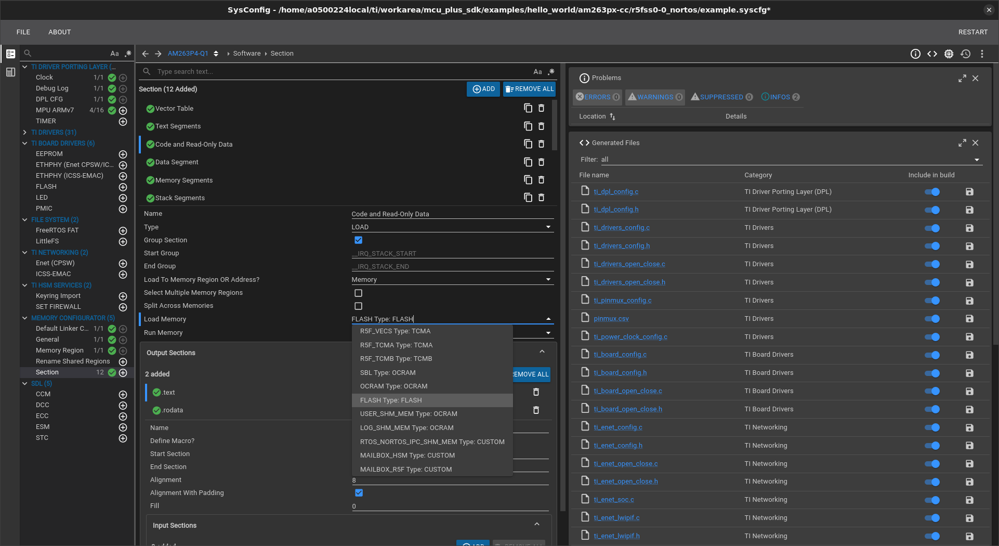
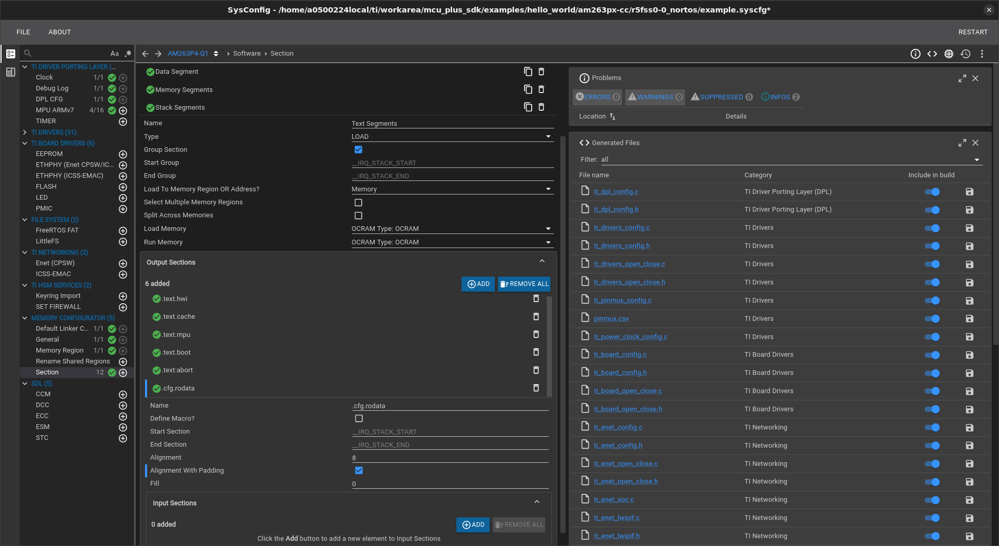
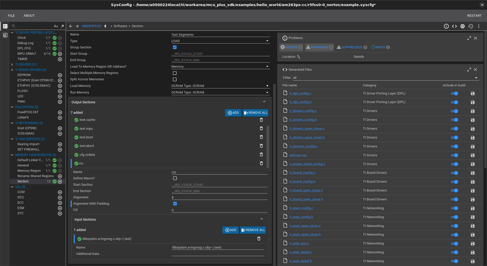

Introduction
- Normally, when running a application, the application code is first copied to RAM by bootloader and then code executes from RAM.
- XIP or eXecute In Place allows a application to execute part of the code from flash without having to copy to RAM.
- Advantage is, this allows users to have a larger code size limited by flash size rather than limited by RAM size.
- Disadvantage is,
- The flash memory is typically slower (~300MB/s bandwidth) vs RAM memory ( > 1600 MB/s),
- Due to this, execution speed, esp when code is not cached in the CPU cache, will be slower as compared to when executing from RAM.
- However in some situations it is needed to execute code from flash for non-real time, non high performance code.
- XIP allows to do this.
Additional References
See also these additional pages for more details and examples about XIP,
Pre-requisites
- The flash memory should be visible to the CPU, in "direct access mode (DAC)" i.e memory mapped mode.
- Here the contents of the flash can be read as any other memory region.
- This typically is a "read-only" memory
- The secondary bootloader needs to enable flash at highest throughput mode in this DAC mode, before booting the application.
- The application entry point, interrupt vectors and initial code upto
main() should still execute from RAM. After main() the code can execute from flash.
Enable XIP for an application
Using linker.cmd
To enable XIP for a application, below changes need to be done,
- Enable cache for the XIP flash region. This is need to get better performance for the XIP execution
- On R5F, this is done by adding a MPU entry for region
0x60000000 of size 256MB. This can be done via SysConfig.
- If a CPU, say M4F, does not have any cache, then recommend to not use XIP for that CPU.
- A sample MPU setting on AM64x, AM243x SOC done via SysConfig is shown below.
- Make sure to enable code execution, and cache for this region.

Flash section in R5F MPU
- Update the linker command file to re-direct required
.text and .rodata sections to FLASH region as shown below SECTIONS {
...
GROUP {
.text.hwi: palign(8)
.text.cache: palign(8)
.text.mpu: palign(8)
.text.boot: palign(8)
.text.main: palign(8) /* this helps ccs to put breakpoint at main */
.text:abort: palign(8) /* this helps in loading symbols when using XIP mode */
} > MSRAM
cio > MSRAM
{
-llibsysbm.a<trgmsg.c.obj> (.text)
}
...
GROUP {
.text: {} palign(8) /* This is where code resides */
.rodata: {} palign(8) /* This is where const's go */
} > FLASH
...
GROUP {
.rodata.cfg: {} palign(8) /* MPU configurations */
} > MSRAM
}
MEMORY
{
...
FLASH : ORIGIN = 0x60100000 , LENGTH = 0x80000
...
}
- When printing logs, CCS utilizes CIO breakpoints. For loading and running XIP .out from CCS, it's essential to keep -llibsysbm.a<trgmsg.c.obj> (.text) inside MSRAM. Additionally, ensure that the main symbol is also kept in the MSRAM because CCS uses it to halt the core at the main when loading the .out.
- The same process can be repeated for multiple CPUs if needed, only make sure the
FLASH defined in MEMORY { ... } for the linker command files of each CPU are non-overlapping.
- NOTE, when multiple CPUs run using XIP, the overall available flash bandwidth get split across multi-CPUs. So the overall performance will degrade vs using single CPU in XIP mode. However, functionally nothing restricts such a mode of operation.
- As part of post build step, one extra step is run as compared to non-XIP case, as listed below
xipGen tool is used to split the application into non-XIP and XIP sections
- The file containing XIP sections is additionally flashed to the flash using the special
flash-xip command passed to the flash writer
- NOTE, the secondary bootloader remains exactly the same when running applications in XIP or non-XIP mode.
- For all the SDK examples
- The linker command is updated to include the
FLASH memory segment. The code/rodata section are NOT re-directed to FLASH by default though, unless mentioned otherwise in the example.
- XIP post-build steps are always invoked as part of application post build. Invoking these steps even though there is no XIP section has no side effect.
- The default flash writer config file has the flashing command needed to flash the XIP sections. Again, if XIP sections are not present there is no side effect on normal non-XIP operation.
- Thus, all one needs to do to enable XIP is
- Add a MPU/MMU entry to mark the flash region as executable + cached
- And update the linker command to mark the code/rodata sections as
FLASH instead of RAM.
- Rest of the steps remain exactly the same as non-XIP case.
Using Memory Configurator
Moving .rodata and .text to flash
As mentioned in the previous section, move .rodata and .text in external flash, as shown in the following image:

Moving text and rodata to flash.
Here load and run memory, both are set to FLASH memory.
Make sure that Alignment with padding checkbox has been checked.
Moving cfg rodata to internal memory
Then, it is required to move .rodata.cfg in the internal memory. For this, refer to the following image:

Moving cfg rodata to internal memory.
Here, .cfg.rodata output section has been added in Text Segments group.
Make sure that Alignment with padding checkbox has been checked.
Moving CIO to internal memory
Refer to following image:

Moving CIO to internal memory.
- add
cio output section to Text Segments group.
- Make sure that
Alignment with padding checkbox has been checked.
- Add
-llibsysbm.a<trgmsg.c.obj> (.text) as the input section
With the above, this will direct cio library in internal memory.
This step is required if CCS logs are enabled. In production build, CCS logs should be disabled.
Enabling secure XIP using OTFA
- Note
- This feature is only valid for HSSE device.
- Applications stored in external flash are susceptible to physical and logical attacks. Ensuring the security and safety of the image executed in place is important to achieve advanced security for the device.
- Signing and encrypting application image to be executed from flash enables this. AM263PX is equipped with OTFA (On-The-Fly-Authentication and Decryption) hardware module to authenticate and decrypt an application running from flash.
- OTFA can be configured to authenticate and decrypt up to four distinct regions in the flash, with different keys. The key management for OTFA is expected to be done by HSM Run Time Firmware.
- The application binary, converted to MCELF format is post-processed for safety and security using the genimage.py tool [Refer Booting Tools]
Steps enable security in XIP image,
- Enter the OTFA configuration settings in JSON format as shown in the example json file below:
{
"mac_size": 4,
"regions": [
{
"start": "0x60000000",
"size": "0x1000000",
"authKeyID" : 1,
"authKey": Absolute path to key For example: "/home/user/ti/mcu_plus_sdk/source/security/security_common/tools/boot/signing/mcu_custMek.key",
"encKeyID" : 1,
"encKey": Absolute path to key For example: "/home/user/ti/mcu_plus_sdk/source/security/security_common/tools/boot/signing/mcu_custMek.key",
"kdSalt" : Absolute path to salt For example: "/home/user/ti/mcu_plus_sdk/source/security/security_common/tools/boot/signing/kd_salt.txt",
"keyFetchMode" : 1,
"cryptoMode":"gcm",
"eccEnable": false
}
]
}
- KeyIDs correspond to the indices of the keys in Keyring which will be provided to the HSM Run Time Firmware via HsmClient_Config for authentication and decryption and used by HsmServer for authentication and decryption.
- If KeyID = 1/3 (SMEK or BMEK), the root key is used to encrypt the image in the flash. This is the same key which is used to encrypt the SBL as well as HSM Run Time firmware.
- If KeyID >= 32, auxilary key is used for encryption. This key is retrieved from the keyring which is managed by the HSM Run Time Firmware.
- Example JSON Path : mcu_plus_sdk/tools/boot/otfa_eccm/otfaConf.json
- Build the application image with the above JSON file as a tool input
- Example :
make -s DEVICE=am263px DEVICE_TYPE=HS oeconfig=mcu_plus_sdk/tools/boot/otfa_eccm/otfaConf.json all
- This generates
- a post-processed MCELF_XIP image, encrypted and authenticated with the same root key key which is used to encrypt the SBL as well as HSM Run Time firmware.
- a note-appended MCELF_RAM image, that contains the OTFA configuration parameters' details.
- Build the uart_uniflash SBL
- Example :
make -s examples/drivers/boot/sbl_uart_uniflash/am263px/r5fss0-0_nortos/ti-arm-clang DEVICE=am263px DEVICE_TYPE=HS all
- Build the any sbl_ospi (ex. sbl_ospi_multicore_elf) SBL
- Example :
make -s examples/drivers/boot/sbl_ospi_multicore_elf/am263px/r5fss0-0_nortos/ti-arm-clang DEVICE=am263px DEVICE_TYPE=HS all
- In order to flash the image using uart_uniflash.py tool, we first need to configure the mcelf_sbl_ospi.cfg. Change the path of the images to the appropriate path.
#-----------------------------------------------------------------------------#
# #
# DEFAULT CONFIGURATION FILE TO BE USED WITH THE FLASHWRITER SCRIPT #
# #
#-----------------------------------------------------------------------------#
#
# By default this config file,
# - points to pre-built flash writer, bootloader for this EVM
# - The application image points to relative path of the ipc echo application image for this EVM
# - Make sure this application is built before running this script
# - You can customized this config file to point to your own bootloader and/or application images
# - You can use --operation=flashverify if you just want to verify the flash contents and not flash the file.
#
# First point to sbl_uart_uniflash binary, which function's as a server to flash one or more files
--flash-writer=(PATH TO)/sbl_uart_uniflash.release.hs.tiimage
# Program the OSPI PHY tuning attack vector
--operation=flash-phy-tuning-data
# When sending bootloader make sure to flash at offset 0x0. ROM expects bootloader at offset 0x0
--file=(PATH TO)/sbl_ospi_multicore_elf.release.hs.tiimage --operation=flash --flash-offset=0x0
# When sending application image, make sure to flash at offset 0x81000 (default) or to whatever offset your bootloader is configured for
--file= (PATH TO)release.mcelf.hs --operation=flash-sector-write --flash-offset=0x81000
# send the XIP image for this application, no need to specify flash offset since flash offset is specified within the image itself
--file=(PATH TO)release.mcelf_xip --operation=flash-mcelf-xip
- Change the boot mode to UART and flash the images using the following command.
cd ~/ti/mcu_plus_sdk/tools/boot/
python3 uart_uniflash.py -p /dev/ttyUSB<xx> --cfg=sbl_prebuilt/am263px-cc/default_sbl_ospi.cfg
- Note
- In order to use auxilary keys for encryption, please check the TIFS documentation for auxilary key usage. For encryption using auxilary keys, a keyring certificate needs to be generated. This certificate contains the key and has to be imported in the SBL build.
Debugging XIP applications
- XIP applications can not be loaded via CCS, hence to debug a XIP application one needs to always flash and run the application and then "load symbols" via CCS to debug the application
- Another alternative is develop and debug the application with all code in "RAM" and then just update the linker command to use "FLASH" and do the final test or debug with application in XIP mode.
- The CCS option to load symbols is shown below,

CCS Load Symbols
- Normal "SW" breakpoints in CCS wont work for code in flash, and "HW" breakpoints should be used.
- To put a breakpoint CCS needs to write a special instruction at the point in code,
- However since the flash memory is "read-only", this will result in a error, hence one should use "HW" breakpoints instead
- Below shows a example of putting a HW breakpoint,

HW Breakpoint
- When prompted enter the function name on which you want the breakpoint to hit.
 1.8.20
1.8.20